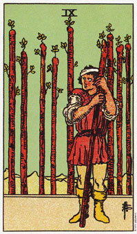

权杖九暗示重新评估目前承诺的时候。
权杖旧描绘的是一个强壮、力气大、警觉性高的人。他面对问题的战斗倾向会限制他怡然自处的能力。当权杖九出现时，它暗示你生活一种冲突的模式。
一连串的争斗已经发展成身体与情绪上的模式，他现在需要另外的冲突去满足它对刺激的渴求。这种渴求会上瘾，所以他需要花更多的时间来思考过去的行动，以便决定那些行动是有效的，那些行动是浪费的。
他到处寻找冲突，却看不出冲突的来源是内在的。你可能会将自己不受欢迎、不被接受的部分强加于别人身上(这种现象在大阿尔克纳的魔鬼牌种会显得更清楚)。如此一来，你将会有一个摸得到、也看到的敌对来源，而不只是一种想法、一种恐惧或一种感觉。然而，如果你继续寻求冲突，你将无法和问题的根本原因达成和解。
大体上的意义
权杖九是一张用来衡量你过去的失败与成功，并决定在未来要做些什么的牌。他先是你察觉，并不是所有你尝试的事情都会成功，这是一个时机，你必须抛弃你生活里一些不完全的计划。
例如，约翰并不确定他和葛丽泰之间的关系。他深爱她并希望和她结婚，但也了解到这意味着他的生活形态必将改变。尤其是，他正考虑是否继续当个空服员。他喜欢这份工作，而且得以脱离约束及单调辛苦的工作，这是他对很多人际关系的态度。他正在衡量他过去的承诺并决定未来的重心所在。他了解到他工作上的约束可能妨碍到他和葛丽泰的关系。对葛丽泰更深的承诺意味着要放弃其它的约定。
在另一个例子，布兰达和她的丈夫在他们损失大量的资金，而且每周工作五十小时的十五个月后，卖掉了他们的事业。她想要再做另一个小生意，态度自然非常谨慎。权杖九的出现，反映了她对进行新事物的态度。
两性关系上的意义
在两性关系的算法中，权杖九表示你以一个谨慎的态度看待你的伴侣或一般的两性关系。也许你曾经被你的伴侣伤害，或还没有解决过去的两性关系，所以你无法真诚的向你目前的伴侣定下承诺。这张牌指出需要检视过去，及衡量你对目前两性关系的承诺。
倒立的权杖九
倒立权杖九牌显示问题已经大到超过你身体力量，你的对抗已经失败了。态度强烈左右结果。当倒立的牌出现，表示你深受恐惧或疑惑的折磨。
我的一个顾客，莎拉，由酗酒的父亲带大。他会毫无理由的、残暴的殴打她。当她五岁时，她学会被攻击时，赶快逃开。对一个小孩子而言，这是很好的生存机制，如此她才可以活到今天。但不幸的，她没调整她的防卫机制，当她目前的两性关系发生问题时，她立即逃开。她只知道抓着钱包，然后逃离家门，直到隔天都没有人能找到她。
她三十七岁了，她的恐惧以及她应付恐惧的方法已妨碍到她和先生发展更进一步的关系。她需要回到正立权杖八的课题上，去经历生命自由自在、舒适的一段时间。
权杖九的倒立显示，倾向关注失败更甚于关注成功。你必须了解失败有益成功，换句话，失败只是延迟成功。当你没有实现当初预期的结果时，至少你已经知道那一条路不能走。
倒立权杖九也意味你需要寻求不同的方法。它未必暗示你应该放弃争斗，仅时表示你应该改变你的方法以应对情境。